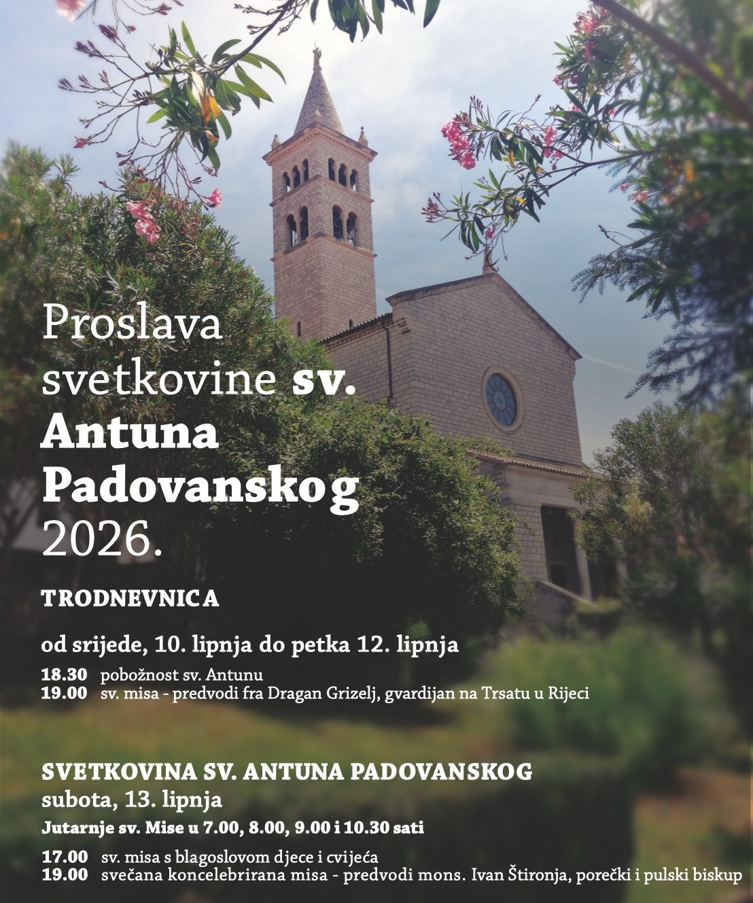

Svete mise
- Radnim danom
- 7:0019:00
- Nedjeljom
- 8:0010:3012:0019:00
- Subotom
- 7:00
Varaždinska 2
Pula, Hrvatska
17:00 – 18:00
Ponedjeljkom, srijedom,
četvrtkom i petkom
Susret u molitvi
Raspored svetih misa, pobožnosti i ispovijedi.
Zajedno u vjeri
Termini kateheza i susreta u našoj župi.

Život u župi
Sve što trebate znati o pripremi, dokumentima i prijavi. Odaberite temu i pročitajte upute.
Krštenja se u našoj crkvi redovito slave subotom ili nedjeljom u 11.30 sati. Za dogovor oko termina potrebno je da se jedan od roditelja javi u župni ured i donese izvod iz matične knjige rođenih za dijete.
Kum treba biti kršten, krizman i pričešćen. Ako živi u braku, treba imati sklopljen sakrament ženidbe; ne smije živjeti u civilnom braku ili izvanbračnoj zajednici.
Sve to piše u posvjedočenju koje kum treba izvaditi u svojoj župi i dostaviti župnom uredu.
Nekoliko dana prije krštenja roditelji i kumovi dolaze na susret na kojem se dogovore detalji obreda.
Kateheze (vjeronauk) za odrasle kandidate koji žele primiti sakramente održavaju se svakog ponedjeljka u 19.30 sati u vjeronaučnoj dvorani Župe sv. Antuna. Započinju prvog ponedjeljka u listopadu i traju do svibnja sljedeće godine.
Kandidati trebaju redovito pohađati kateheze kako bi na kraju mogli primiti željene sakramente.
Ako kandidat živi u izvanbračnoj vezi ili civilnom braku, uvjet za primanje sakramenata je da istoga dana kada prima krštenje, krizmu i pričest sklopi i sakrament ženidbe.
Kum kod krštenja ili krizme treba biti kršten, krizman i pričešćen. Ako živi u braku, treba imati sklopljen sakrament ženidbe; ne smije živjeti u civilnom braku ili izvanbračnoj zajednici.
Sve to piše u posvjedočenju koje kum treba izvaditi u svojoj župi i dostaviti župnom uredu.
Sakrament prve pričesti redovito se prima u trećem razredu osnovne škole. Vjeroučenik treba redovito dolaziti na vjeronauk tijekom te školske godine i na nedjeljnu svetu misu.
Prvopričesnici koji nisu kršteni u Župi sv. Antuna u Puli trebaju donijeti potvrdu o krštenju iz župe krštenja.
Nekoliko dana prije prve pričesti održava se prva sveta ispovijed. Dvaput godišnje organizira se susret za roditelje prvopričesnika.
Sakrament krizme redovito se prima u osmom razredu osnovne škole. Vjeroučenik treba redovito dolaziti na vjeronauk tijekom te školske godine i na nedjeljnu svetu misu.
Krizmanici koji nisu kršteni u Župi sv. Antuna u Puli trebaju donijeti potvrdu o krštenju iz župe krštenja.
Kum kod krizme treba biti kršten, krizman i pričešćen. Ako živi u braku, treba imati sklopljen sakrament ženidbe; ne smije živjeti u civilnom braku ili izvanbračnoj zajednici.
Sve to piše u posvjedočenju koje kum treba izvaditi u svojoj župi i dostaviti župnom uredu.
Vjenčanje se redovito obavlja u župi zaručnice ili zaručnika. Ako nijedno od vas ne stanuje na području župe u kojoj se želite vjenčati, zaručnik ili zaručnica treba od svoga župnika pribaviti dozvolu za vjenčanje izvan vlastite župe.
Kada pribavite sve potrebne dokumente, dođite oboje u župni ured najkasnije mjesec dana prije vjenčanja. Župnik će s vama proći postupak za ženidbu i dogovoriti ostale pojedinosti obreda.
Za sklapanje sakramenta ženidbe obavezan je zaručnički tečaj. Održava se u Župi sv. Josipa u Puli, Ulica Dinka Vitezića 32. Informacije o terminima možete pronaći na web stranici Porečke i Pulske biskupije.
Tečaj možete obaviti i drugdje gdje se organizira. Po završetku dobivate potvrdu koju prilažete ostalim dokumentima.
Taksa za vjenčanje, određena od Biskupskog ordinarijata, iznosi 50 €.
Kićenje crkve možete dogovoriti s gospođom Milkom Rozesin, koja redovito kiti crkvu. Iz praktičnih razloga nije moguće angažirati nekog drugog za kićenje.
Sviranje i pjevanje dogovarate sa svećenikom. Budući da je vjenčanje liturgijski čin, u obredu nisu dopuštene svjetovne i zabavne pjesme.
Ne preporučujemo bacanje riže ili konfeta. Ako ih ipak bude, zaručnici trebaju zadužiti osobe koje će nakon vjenčanja pomesti prostor ispred crkve.
Nakon što dogovorite termin u pogrebnom poduzeću, sprovod je potrebno osobno prijaviti u župnom uredu, u redovito uredovno vrijeme ili, ako to nije moguće, nakon večernje svete mise.
Sprovodna taksa, određena od Biskupskog ordinarijata, iznosi 50 €.